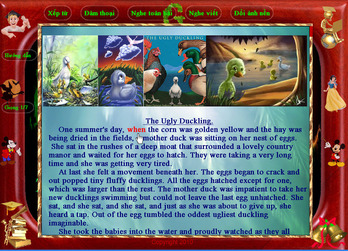
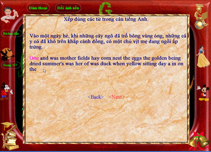
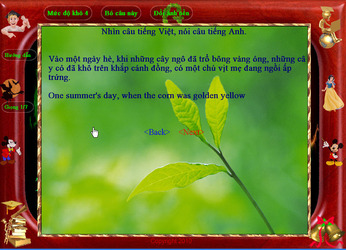
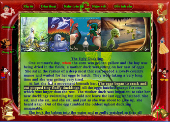
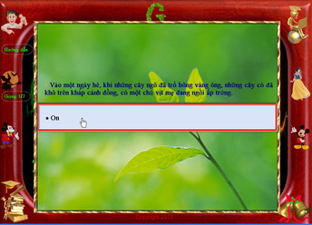

Phần mềm học tiếng Anh
Grammar 3.1
(Trang chủ)
Phần mềm được cộng đồng mạng xem là tốt nhất cho người
Việt: Gồm đủ 4 kỹ năng NGHE-NÓI-ĐỌC-VIẾT.
Là tín đồ của bộ môn tiếng Anh, chắc các bạn mong muốn tìm kiếm:
- Phần mềm học tiếng Anh lớp 6 7 8 9 10 11 12
- Phần mềm học tiếng Anh miễn phí tốt nhất
- Phần mềm học tiếng anh offline miễn phí
- Phần mềm học từ vựng tiếng anh
- Cách tự học tiếng anh
- Học tiếng Anh tại nhà
- Giáo trình dạy tiếng Anh tốt nhất
- Phương pháp luyện nói tiếng Anh, đàm thoại tiếng Anh tốt nhất
- Phần mềm luyện nghe tiếng Anh tốt nhất
- Phần mềm học tiếng anh miễn phí trên laptop
- Phần mềm học tiếng Anh giao tiếp
- Phần mềm học từ vựng tiếng anh cho trẻ em
- Phần mềm học tiếng anh cho trẻ em mẫu giáo
- Phần mềm học tiếng anh cho trẻ em trên máy tính
- Phần mềm học tiếng anh cho trẻ em hay nhất
- Phần mềm học tiếng anh cho bé
- Phần mềm học tiếng anh cho học sinh tiểu học
- Phần mềm học tiếng anh tốt nhất cho người việt
- Tiếng Anh cho người xuất cảnh
- Học tiếng Anh qua phim
- Học tiếng Anh cơ bản
- Phim song ngữ Anh Việt
- Tiếng Anh cho người đi làm
- Tiếng Anh cho trẻ mẫu giáo
- Đàm thoại tiếng Anh căn bản
- ...
Grammar ra đời nhằm đáp ứng những tiêu chí đó. Chúc các bạn tìm được nguồn cảm hứng khi đồng hành với Grammar.
Một ý chí - một tấm lòng
GRAMMAR (gọi tắt là G) là phần mềm do một người nghèo tạo nên trong hơn 20 năm miệt mài tìm tòi và sáng tạo. G được khởi công từ năm 1989 với chiếc máy 386 cũ kỹ.
G không nhằm mục đích tạo nên một thành quả hoặc chứng tỏ bất cứ điều gì. G là món quà đặc biệt dành cho người nghèo, những người có ý chí, những người gặp hoàn cảnh khó khăn, những người sa đà vào Game nay muốn tìm lại những gì đã bỏ lỡ, những người đang cần luyện thi, đang phải vừa học vừa làm... và cuối cùng G là món quà dành cho tất cả mọi người yêu thích môn tiếng Anh.
Bằng sự sáng tạo không ngừng nghỉ, G đã ngày càng phát triển và mong làm hài lòng tất cả mọi người ở mọi trình độ, mọi lứa tuổi, mọi hoàn cảnh. Tiêu chí này thực sự rộng rãi nên việc thiết kế G gặp rất nhiều khó khăn.
Mục đích chính của G là tạo một công cụ cho người nghèo có thể thoát nghèo bằng ý chí học tập; người giàu có thể tiết kiệm chi phí học tập, tiết kiệm thời gian và công sức. Cuối cùng G mong muốn trở thành một công cụ mạnh mẽ giúp giải quyết tất cả mọi khó khăn vất vả cho người học tiếng Anh.
- Phần mềm học tiếng Anh lớp 6 7 8 9 10 11 12
- Phần mềm học tiếng Anh miễn phí tốt nhất
- Phần mềm học tiếng anh offline miễn phí
- Phần mềm học từ vựng tiếng anh
- Cách tự học tiếng anh
- Học tiếng Anh tại nhà
- Giáo trình dạy tiếng Anh tốt nhất
- Phương pháp luyện nói tiếng Anh, đàm thoại tiếng Anh tốt nhất
- Phần mềm luyện nghe tiếng Anh tốt nhất
- Phần mềm học tiếng anh miễn phí trên laptop
- Phần mềm học tiếng Anh giao tiếp
- Phần mềm học từ vựng tiếng anh cho trẻ em
- Phần mềm học tiếng anh cho trẻ em mẫu giáo
- Phần mềm học tiếng anh cho trẻ em trên máy tính
- Phần mềm học tiếng anh cho trẻ em hay nhất
- Phần mềm học tiếng anh cho bé
- Phần mềm học tiếng anh cho học sinh tiểu học
- Phần mềm học tiếng anh tốt nhất cho người việt
- Tiếng Anh cho người xuất cảnh
- Học tiếng Anh qua phim
- Học tiếng Anh cơ bản
- Phim song ngữ Anh Việt
- Tiếng Anh cho người đi làm
- Tiếng Anh cho trẻ mẫu giáo
- Đàm thoại tiếng Anh căn bản
- ...
Grammar ra đời nhằm đáp ứng những tiêu chí đó. Chúc các bạn tìm được nguồn cảm hứng khi đồng hành với Grammar.
Một ý chí - một tấm lòng
GRAMMAR (gọi tắt là G) là phần mềm do một người nghèo tạo nên trong hơn 20 năm miệt mài tìm tòi và sáng tạo. G được khởi công từ năm 1989 với chiếc máy 386 cũ kỹ.
G không nhằm mục đích tạo nên một thành quả hoặc chứng tỏ bất cứ điều gì. G là món quà đặc biệt dành cho người nghèo, những người có ý chí, những người gặp hoàn cảnh khó khăn, những người sa đà vào Game nay muốn tìm lại những gì đã bỏ lỡ, những người đang cần luyện thi, đang phải vừa học vừa làm... và cuối cùng G là món quà dành cho tất cả mọi người yêu thích môn tiếng Anh.
Bằng sự sáng tạo không ngừng nghỉ, G đã ngày càng phát triển và mong làm hài lòng tất cả mọi người ở mọi trình độ, mọi lứa tuổi, mọi hoàn cảnh. Tiêu chí này thực sự rộng rãi nên việc thiết kế G gặp rất nhiều khó khăn.
Mục đích chính của G là tạo một công cụ cho người nghèo có thể thoát nghèo bằng ý chí học tập; người giàu có thể tiết kiệm chi phí học tập, tiết kiệm thời gian và công sức. Cuối cùng G mong muốn trở thành một công cụ mạnh mẽ giúp giải quyết tất cả mọi khó khăn vất vả cho người học tiếng Anh.
Phần cải tiến mới của Grammar 3.1:
- Phiên bản 3.1 gồm 2 đĩa.
- Thêm Bài tập Word Forms (gồm 41.112 bài tập) là phần luyện kỹ năng nhận biết: danh từ, tính từ, động từ, trạng từ... của một từ gốc. Điểm Word Forms thường cao nhất trong các bài thi. Vì thế nó rất quan trọng.
- Nâng cấp mục LUYỆN NÓI. Phiên bản này gồm 21.128 cặp câu Anh-Việt giúp luyện nói theo kiểu ĐỐI THOẠI. Theo đó, bạn có thể chọn những câu tiếng Việt muốn học. Máy sẽ soạn câu đối thoại tương ứng và tự chia chúng thành nhiều bài nhỏ. Mỗi bài 4 cặp câu đối thoại. Cách học này cũng hệt như học với một gia sư người Mỹ tận tình và kiên nhẫn nhất thế giới. Máy sẽ hỏi và nhắc bạn trả lời từng từ theo từng tốc độ chọn và có thể luyện tập hoặc ôn lại bao nhiêu lần cũng được. Ngoài ra bạn có thể học từng từ vựng và xem nghĩa dịch Việt từng câu cũng như học ngữ pháp hoặc tập viết câu đã chọn, tạo file Wav cho bài đối thoại để chép vào điện thoại di động.
- Nâng cấp cơ chế bật đỏ từ vựng chọn. Tự động cập nhật từ vựng của bạn đã có.
- Nâng cấp giao diện quay từ.
- Có thể tự tạo bài đọc và hình ảnh một cách dễ dàng.
- Có thể gửi bài đọc đã tạo lên web để chia sẻ giúp nhau học tập.
- Có thể tự tạo từ vựng hoặc sửa từ vựng bằng cách nhấn phím F2.
- Có thể chọn và tra cụm từ bằng cách quét đen cụm từ.
- Giảm dung lượng tải chương trình: Bỏ hẳn thư mục sound2 (428Mb)
- Grammar 3.1 chạy tốt và đã được kiểm chứng cẩn thận trong tất cả các phiên bản windows (XP sp1, XP sp2, XP sp3, Vista, win 7_32bit, win 7_64 bit, Win 8, Win 8.1, Win10 (32, 64 bit)). Kể cả các máy dùng ghost đa cấu hình.
- Có bản nâng cấp từ Grammar 2.11, 2.12, 3.0 lên Grammar 3.1.
Xin xem chi tiết trong mục Tải Grammar để tải chương trình và cách cài đặt.
- Thêm Bài tập Word Forms (gồm 41.112 bài tập) là phần luyện kỹ năng nhận biết: danh từ, tính từ, động từ, trạng từ... của một từ gốc. Điểm Word Forms thường cao nhất trong các bài thi. Vì thế nó rất quan trọng.
- Nâng cấp mục LUYỆN NÓI. Phiên bản này gồm 21.128 cặp câu Anh-Việt giúp luyện nói theo kiểu ĐỐI THOẠI. Theo đó, bạn có thể chọn những câu tiếng Việt muốn học. Máy sẽ soạn câu đối thoại tương ứng và tự chia chúng thành nhiều bài nhỏ. Mỗi bài 4 cặp câu đối thoại. Cách học này cũng hệt như học với một gia sư người Mỹ tận tình và kiên nhẫn nhất thế giới. Máy sẽ hỏi và nhắc bạn trả lời từng từ theo từng tốc độ chọn và có thể luyện tập hoặc ôn lại bao nhiêu lần cũng được. Ngoài ra bạn có thể học từng từ vựng và xem nghĩa dịch Việt từng câu cũng như học ngữ pháp hoặc tập viết câu đã chọn, tạo file Wav cho bài đối thoại để chép vào điện thoại di động.
- Nâng cấp cơ chế bật đỏ từ vựng chọn. Tự động cập nhật từ vựng của bạn đã có.
- Nâng cấp giao diện quay từ.
- Có thể tự tạo bài đọc và hình ảnh một cách dễ dàng.
- Có thể gửi bài đọc đã tạo lên web để chia sẻ giúp nhau học tập.
- Có thể tự tạo từ vựng hoặc sửa từ vựng bằng cách nhấn phím F2.
- Có thể chọn và tra cụm từ bằng cách quét đen cụm từ.
- Giảm dung lượng tải chương trình: Bỏ hẳn thư mục sound2 (428Mb)
- Grammar 3.1 chạy tốt và đã được kiểm chứng cẩn thận trong tất cả các phiên bản windows (XP sp1, XP sp2, XP sp3, Vista, win 7_32bit, win 7_64 bit, Win 8, Win 8.1, Win10 (32, 64 bit)). Kể cả các máy dùng ghost đa cấu hình.
- Có bản nâng cấp từ Grammar 2.11, 2.12, 3.0 lên Grammar 3.1.
Xin xem chi tiết trong mục Tải Grammar để tải chương trình và cách cài đặt.
Sau đây là những nét sơ lược của chương trình:
Menu chính
|
|
Menu được thiết kế sao cho tất cả mọi người đều có thể sử dụng
dễ dàng. Vì thế đôi khi nó bị cho là xấu xí. Bên trái Menu gồm những mục thiết yếu như:
Bài đọc, Từ Vựng, Văn Phạm, Luyện nghe, Luyện nói, Học Từ
vựng bằng tranh và cả mục chọn âm thanh, chỉnh tốc độ giọng đọc, xem cách học
v.v...
Bên phải Menu là những mục luyện văn phạm chuyên sâu bằng việc tập làm bài trắc nghiệm. Chúng dành cho những người muốn đi thi lấy bằng cấp, chứng chỉ trong và ngoài nước. Chúng gồm các mục như: |
|
Bài đọc
|
|
Mục này là một thư viện lớn, bao gồm hơn 1500 bài đọc với nhiều chủ đề từ ngắn đến dài, từ cơ bản đến nâng cao và ở dạng song ngữ. Bạn có thể tra từ, xem giải nghĩa từ ở dạng ngắn gọn hoặc chi tiết với bộ tự điển Anh-Việt khổng lồ (500.000 từ) và một bộ tự điển có phiên âm tiếng Việt giúp những người mới bắt đầu học. Bạn có thể chọn từ mới, xem nghĩa Việt từng câu, nghe đọc lại từng câu. Có thể kết hợp với 6 giọng đọc thuộc loại hay nhất thế giới và bạn có thể chỉnh tốc độ của từng giọng đọc. Có những bài đọc bằng âm thanh thực (Mp3). Ngoài ra còn hàng loạt tiện ích rất hữu dụng và lý thú áp dụng trong bài đọc như: Xếp từ, Đàm thoại, Nghe toàn bài, Nghe Viết. Ở góc trái màn hình luôn có thẻ Hướng dẫn để bạn xem cách dùng phím + chuột của từng công đoạn khi học tập. Đặc biệt là chức năng Chọn từ. Bạn có thể chọn từ muốn học. Chúng sẽ được bật đỏ trong bài đọc và được lưu vào sổ tay riêng trong mục Từ Vựng Của Bạn. Thêm vào đó bạn có thể tự nhập và tạo mục từ mới cho riêng mình. Tất cả thao tác dùng phím, chuột được sắp đặt một cách ngắn gọn và rất dễ sử dụng. |
Những thao tác mà bạn có thể áp dụng cho một bài
đọc gồm:
Chọn từ

Đây là chức năng rất quan trọng và hữu dụng. Trước tiên, bạn tra từ và nhấn phím Enter. GRAMMAR có sẵn bộ tự điển Anh-Việt hơn 500.000 ngàn mục từ. Mỗi từ đều kèm theo các dạng: danh từ, tính từ, động từ, trạng từ... của từ gốc rất chi tiết.
Từ bạn chọn sẽ bật đỏ trong bài đọc và được lưu vào sổ tay riêng nằm trong mục Từ Vựng Của Bạn.
Sau đó bạn có thể mở mục từ vựng của bạn để học từ đã chọn một cách lý thú và khoa học .
Xếp từ

Phần này nhằm giúp bạn vận dụng những kiến thức đã học ở mục Văn Phạm của chương trình.
Bạn sẽ được cung cấp một câu tiếng Việt và một câu tiếng Anh tương ứng nhưng bị đảo lộn trật tự các từ Anh. Nhiệm vụ của bạn là sắp xếp chúng lại cho đúng. Bạn chỉ cần nhấn chuột phải vào từ cần di chuyển. Nếu đúng, từ đó sẽ tự động xếp kế bên những từ đã xếp đúng ở đầu câu Anh.
Đàm thoại từ bài
đọc

Phần này giúp bạn luyện nói tiếng Anh theo từng câu có trong bài đọc
Bạn sẽ được cung cấp một câu tiếng Việt và tập nói câu tiếng Anh tương ứng. Máy sẽ nhắc từng từ theo mức độ nhanh chậm. Bạn có thể chỉnh mức độ này ở thẻ Mức độ khó phía trên khung bài học.
Nghe toàn bài

Phần này giúp bạn luyện nghe một cách hoàn hảo từng câu trong bài đọc. Máy sẽ tự động đọc từng câu. Bạn có thể nhấn phím mũi tên trái để nghe lại nhiều lần một câu bất kỳ cho đến khi nghe hiểu được câu đó. Đồng thời bạn có thể chuyển sang câu kế tiếp một cách dễ dàng.
Nhấn vào thẻ Giọng, bạn có thể chọn giọng, chỉnh tốc độ đọc nhanh hoặc thật chậm theo ý muốn.
Nghe Viết

Bạn được cung cấp câu tiếng Việt và giọng đọc tiếng Anh vang lên tương ứng. Bạn cố đoán câu tiếng Anh và gõ chúng vào ô chờ. Nếu gõ sai, máy sẽ đọc lại đoạn cần gõ. Mục đích của phần này là giúp bạn thuộc mặt chữ. Nhớ rằng G luôn luyện tập từng bước theo bậc thang và độc lập. Nghĩa là không có phần nào buộc bạn phải phối hợp nhiều kỹ năng cùng một lúc.
Từ Vựng Của Bạn
|
|
Đây là "Cuốn sổ tay" chứa tất cả những từ bạn chọn trong quá trình học. Bạn có thể nhập từ vựng qua bài đọc bằng cách tra từ rồi nhấn Enter hoặc trực tiếp nhập từ vựng bằng cách gõ từ vào chương trình mà không cần mở bất cứ thẻ nào. Số từ vựng chọn sẽ nằm trong một danh sách và tất cả chúng có màu xanh. Bạn có thể chọn học một số từ trong danh sách bằng cách tô đỏ chúng. Sau đó mở phần Quay Từ để học. Quay từ là hình thức đưa từ vựng chạy ngang qua màn hình với tốc độ có thể chỉnh. Đồng thời có thể tra từ, phóng to cỡ chữ, chỉnh màu chữ, loại bỏ những từ đã thuộc hoặc viết lại từ. Tất cả các mục của chương trình đều có hỗ trợ phát âm câu hoặc từ bằng giọng Mỹ. Chú ý: Mục Quay từ nhằm mục đích ghi nhớ 50%. Muốn nhớ từ vựng vĩnh viễn, bạn cần đọc thật nhiều lần bài đọc. |
Từ Vựng (Tranh)
|
|
Kết cấu của phần này trông có vẻ đơn giản nhưng thực ra nó rất hữu dụng. Hiệu quả của nó hình thành từ phương pháp sáng tạo. Bạn có thể chọn số lượng tiêu điểm cần học trong tranh chứ không buộc phải học tất cả tiêu điểm cùng một lúc. Việc học gồm 2 hình thức luyện tập: 1. Nhìn tranh, đoán từ Anh rồi bấm xem kết quả. 2. Nghe từ Anh, tìm tiêu điểm đúng. Đặc biệt, phần này có thể áp dụng cho trẻ nhỏ từ 3 tuổi trở lên. Đồng thời đặc điểm khá thú vị của chương trình là lượng bài tập của tất cả các mục đều dồi dào. |
Văn Phạm
|
|
Đây là một tự điển Văn phạm gồm các mục được sắp xếp khoa học theo chủ đề, trình tự từ thấp nhất đến cao nhất và rất đầy đủ với lời giảng rõ và cặn kẽ đến mức bạn phải bực mình! Bởi lẽ chương trình nhằm phục vụ tất cả mọi đối tượng kể cả dân tộc vùng núi hoang sơ. Điều này cũng có nghĩa là người hoàn toàn không biết chút gì về tiếng Anh sẽ dễ dàng học phần này để mai sau trở thành giáo viên Anh ngữ. Trong khi xem văn phạm bạn có thể tra từ, nhập từ chọn vào sổ tay. Mục văn phạm có biểu tượng màu đỏ ở đầu dòng sẽ có bài tập đi kèm. Để làm bài tập, bạn nhấn chuột phải vào nó và nhấn phím Enter. Bạn có thể tra từ trong khi làm bài tập hoặc xem câu đề bài được dịch Việt. Bạn có thể chọn 2,3,4... mục văn phạm cùng một lúc để làm bài tập tổng hợp các mục đó. Có thể xem lại văn phạm khi cần thiết. Nói chung, chương trình cho phép dùng tự điển và Chọn từ ở tất cả các mục. Đồng thời, các chức năng quan trọng đều được liên thông với nhau để tạo hiệu quả tối đa. |
Luyện nghe
|
|
Ngoài việc nghe ở các bài đọc, phần này còn cung cấp thêm 2 dạng luyện nghe: 1. Luyện nghe bài tập: đây là dạng trắc nghiệm. Nghe câu Anh rồi đoán câu Việt đúng nhất trong 4 câu Việt. Với kiểu thiết kế này, bạn có thể luyện tập cho dù vốn từ vựng ở bất cứ mức nào. 2. Nghe video: Chương trình hỗ trợ một số video có sẵn trên mạng. Bạn có thể nghe lại từng câu, tra từ, chọn từ trong đoạn video với thao tác rất dễ. Đặc biệt có cả phim hoạt hình. Video được phân rõ theo trình độ từ dễ đến khó, bao gồm những video nổi tiếng nhất hiện nay. Tham khảo trang Video để tải video về máy. |
Luyện nói
|
|
Bạn sẽ không thể ngờ được công năng của phần này. Theo một số người đã thử qua thì nó thực sự tốt hơn học đàm thoại trực tiếp với gia sư người Mỹ. Các câu đàm thoại được chia thành các chủ đề trong danh sách bên trái. Bạn được quyền chọn chủ đề. Trong mỗi chủ đề bạn có thể chọn những câu cần học. Sau khi chọn, chúng được tự động phân thành bài, mỗi bài 4 cặp câu. Sẽ có 1 giọng Mỹ nêu câu hỏi và bạn trả lời đúng như câu bạn đã chọn. Bạn được nhắc từng từ, theo từng tốc độ tự chọn. Bạn có thể tạo File âm thanh của các cặp câu này và chép vào điện thoại. Như vậy khi mở một bài, bạn sẽ học số câu do chính mình đã chọn. Nếu học theo bài bản thì bạn mở một bài và học từ vựng trong đó theo quy trình giống như mục Bài đọc. Sau đó mới nhấn chọn thẻ đàm thoại. Nếu chỉ cần đàm thoại theo câu mà không cần học từ vựng thì bạn chọn câu, mở bài đọc thứ nhất rồi vào ngay thẻ đàm thoại. Như vậy bạn có thể ứng dụng ngay câu vừa học vào công sở với thời gian ngắn nhất. Tuy nhiên về nguyên tắc sư phạm thì kiểu học này không được khuyến khích. |
Hình minh họa ở đây không thể mô phỏng hết công năng của mục này. Sẽ có 6 giọng của người Mỹ sát bên bạn và kiên nhẫn nhắc cho bạn thật chậm từng từ một
trong câu. Bạn có thể chỉnh độ nhắc nhanh - chậm tùy thích. Nó phối hợp với thẻ Mức độ khó để tạo PHẢN XẠ ĐÀM THOẠI
một cách hiệu quả và dễ học nhất. Nó giải quyết được nhu cầu bức xúc nhất và là mơ ước của những tín đồ học
ngoại ngữ.
Luyện Thi
|
|
Phần này gồm nhiều mục chứa nhiều đề thi ở dạng trắc nghiệm dành cho người muốn thi lấy các chứng chỉ phổ biến hiện nay. Thường thì mỗi bài đều có phần dịch câu đề, tra từ, chọn từ, giảng giải tỉ mỉ từng câu đáp án và tra cứu văn phạm. Chỉ một số ít mục bài tập không có phần giảng hoặc dịch câu đề. Bởi lẽ chúng có thể là những mục cần học thuộc lòng theo quy tắc. Đặc biệt có mục WORD FORMS riêng biệt gồm 41.112 bài tập. Giúp luyện thi lấy điểm cao. Đây là phần luyện kỹ năng nhận biết: danh từ, tính từ, động từ, trạng từ... của một từ gốc. Điểm Word Forms thường cao nhất trong các bài thi. Vì thế nó rất quan trọng. |

Copyright © 1997 GRAMMAR All Rights Reserved